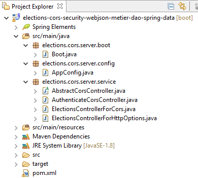
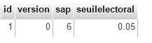
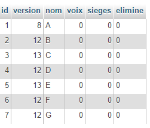
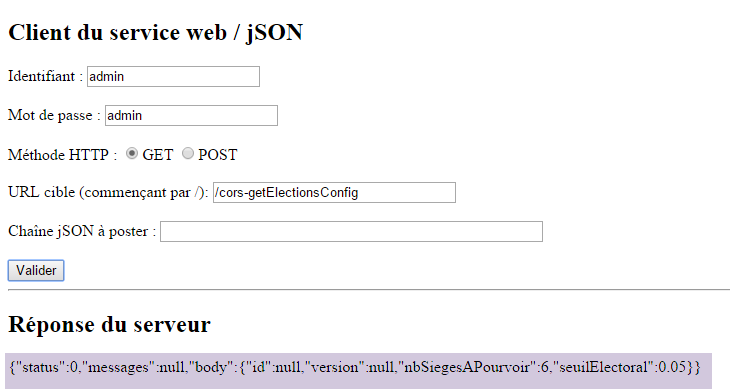
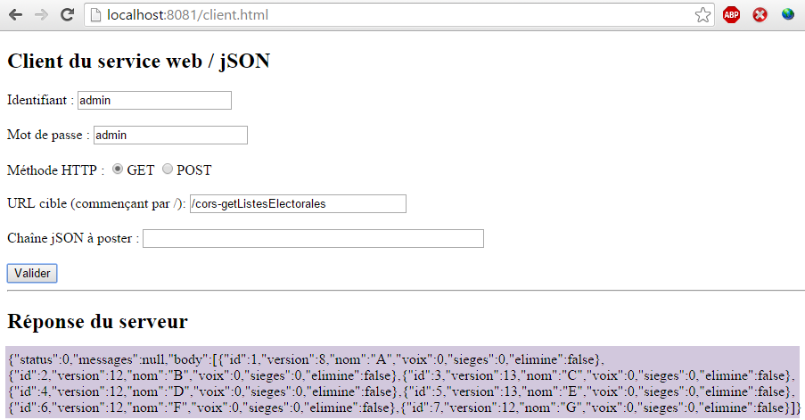
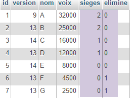

19. [TD] Elections avec des requêtes inter-domaines
Mots clés : CORS (Cross-Origin Resource Sharing).
Nous allons ici créer un nouveau projet pour que le service web sécurisé des élections accepte des requêtes inter-domaines.
Le projet Eclipse est le suivant :
|  |
Travail à faire : en suivant le processus décrit au paragraphe 18.9, page 362, construisez ce projet.
Lorsque ce projet est construit, voici ce qu'on peut faire avec le client HTML décrit au paragraphe 18.2, page 351. Au départ des requêtes, la base de données [dbelections] est la suivante :
|  |  |
|  |
|  |
 |
En [1], la valeur jSON postée est la suivante :
En [2], les champs [sieges] et [elimine] ont été calculés. Nous copions le champ [body] de [2] en [3] ci-dessous :
 |
La base de données [dbelections] est alors la suivante :
|  |